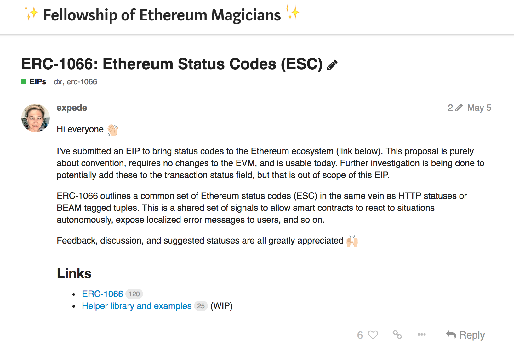

Standards-building In Ethereum-land
How to build the foundations of ecosystems

Jamie Pitts
http://twitter.com/jamiepitts
Before this gets started...
Some Resources to open up
Ethereum Improvement Proposals (EIPs)
👉 https://eips.ethereum.org/Magicians' Forum
👉 https://ethereum-magicians.orgCat Herders
👉 https://www.ethereumcatherders.com
Technical Standard
A formal document which establishes uniform engineering or technical criteria, methods, processes, and practices.
It takes a lot of coordination for a standard to be adopted!
Are standards different in Ethereum-land?
Challenges
- Uncensorable, open network: no one is really in charge
- Thousands of users, billions of dollars depend on it working
- Sometimes there is controversy and drama
- Long road from proposal, to prototype, to testing, to deployment
Opportunities
- Open institutions "manage the commons"
developers, proposal editors, coordinators, client teams - Anyone can propose! It all happens online!
- Proposals get expert input
- Bring value to the network and to smart contract systems
The Proposal

EIP: Ethereum Improvement Proposal
EIPs describe standards for the Ethereum platform, including core protocol specs, client APIs, and contract standards.
ERCs
A type of EIP which describes application-level standards and conventions, including contract standards.
Core EIPs
A type of EIP which requires a consensus fork!
Getting an EIP to Ethereum mainnet
- The EIP process
- The network upgrade process
The EIP process
- Goal: create high quality proposals, evaluated by the community
- The proposer seeks competent input (Magicians' Forum)
- The proposer seeks buy-in from stakeholders
The network upgrade process
- Goal: maintain a healthy, evolving network
- Cat Herders organize the process
- Hard Fork Coordinators manage the evaluation and scheduling for inclusion in an upgrade
- "core devs" implement the proposals and decide if they should be included in a HF
The "core devs" calls
- Protocol client developers and HF coordinators
- Finding consensus about each proposal
- Open process
- Calls are posted to Youtube
How do I work on an EIP?
The EIPs are in a git repo!
"Because the EIPs are maintained as text files in a versioned repository, their revision history is the historical record of the feature proposal."
Format of EIPs
Each EIP should have the following parts:
|
Preamble Simple Summary Abstract Motivation Specification |
Rationale Backwards Compatibility Test Cases Implementations Copyright Waiver |
EIPs are written in markdown format.
Ready to propose? Or want to help out?
Join a discussion on
https://ethereum-magicians.org
Don't be shy! We're friendly.
Join in the discussion to learn or to help others
Resources
Ethereum Improvement Proposals (EIPs)
👉 https://eips.ethereum.org/Magicians' Forum
👉 https://ethereum-magicians.orgCat Herders
👉 https://www.ethereumcatherders.com
Jamie
http://twitter.com/jamiepitts
This presentation was built with reveal.js https://github.com/hakimel/reveal.js